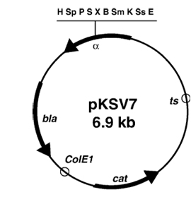
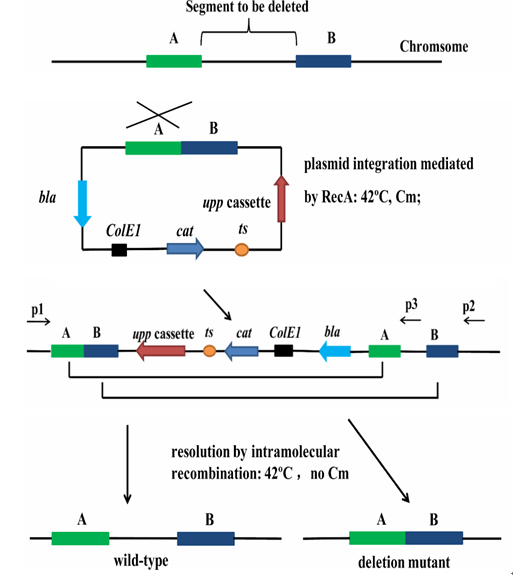
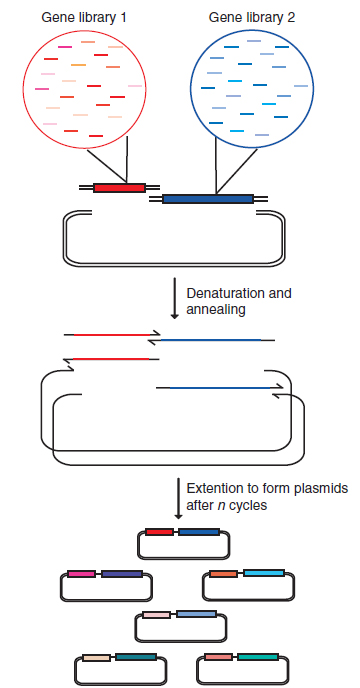
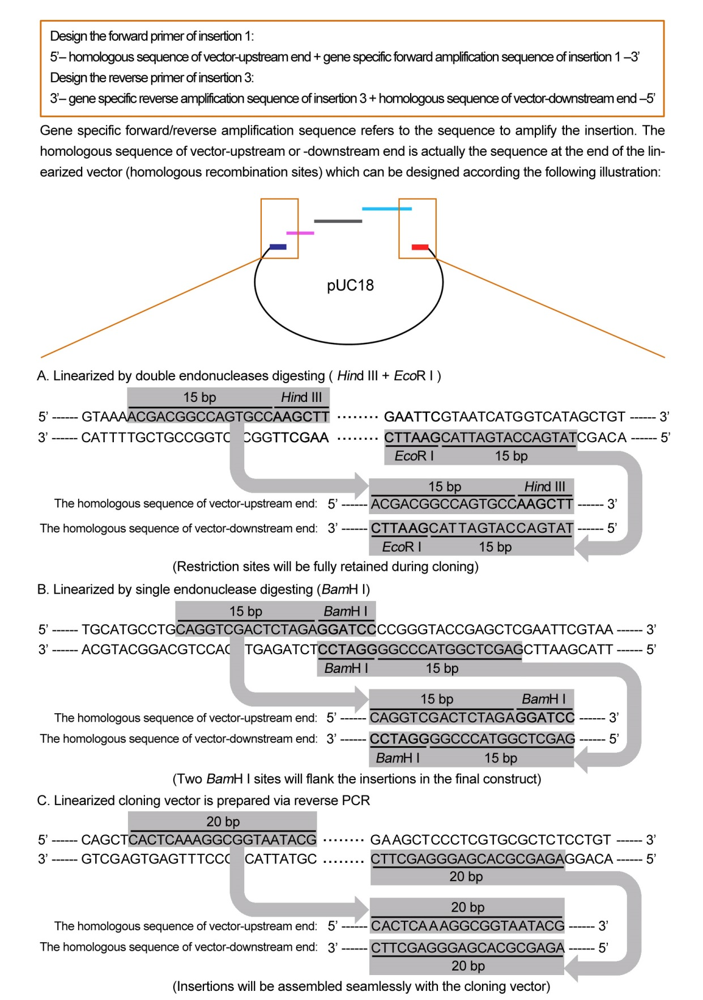
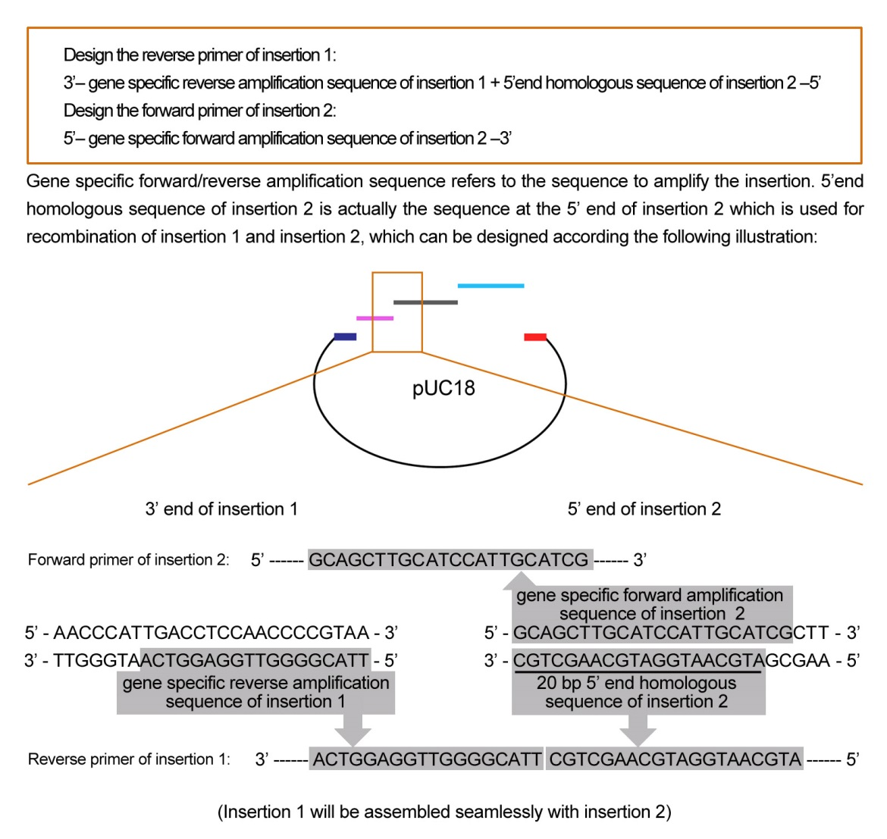

1. The Markerless Gene Replacement Method for Bacillus amyloliquefaciens LL3
Abstract: This is a markerless gene replacement method that combines a temperature-sensitive plasmid pKSV7 with a counter-selectable marker, the upp gene encoding uracil phosphoribosyltransferase (UPRTase) for the Bacillus amyloliquefaciens strain LL3. This method allows us to adapt a two-step plasmid integration and excision strategy to perform markerless deletion of genes.
☞☟
Introduction

The temperature-sensitive plasmid pKSV7 of Bacillus can replicate at 30oC normally, but the plasmid will be lost at 42oC. Combined the plasmid with a counter-selectable marker, the markerless gene replacement method can be constructed.
The upp gene encodes uracil phosphoribosyl transferase (UPRTase), which makes U transfer to UMP. Thus, cell can use extrinsic uracil via the following pathway 5-FU ➔ 5F(fluorin)-UMP ➔ 5-F-dUMP. Since the products of this pathway are toxic, cellular growth can be restrained.
If upp gene is knocked out, bacteria can resist 5-FU toxicity.
Procedures
ΔuppB. amyloliquefaciens LL3 was constructed, which can resist 5-fluorouracil.
Construction of the upp cassette: An 850 bp DNA fragment carrying the upp gene with its 5' regulatory region and its 3' transcription terminator was generated by PCR from B. subtilis 168 genomic DNA using primers Upp-F and Upp-R. After digesting with KpnI and BamHI, the fragment was cloned in the KpnI–BamHI site of pKSV7. The resulting counter-selective plasmid was designated pKSU.
The target gene was selected. The upstream sequence A and downstream sequence B of target gene were combined by over-lapping PCR and ligated into plasmid pKSU.
Plasmid pKSU is a temperature sensitive plasmid, which replicates at 30oC and got expelled at 42oC, and contains an upp expression cassette.
The recombinant plasmid was transformed into the target strain and the resulting transformants were cultured at 42oC with chloramphenicol to select single-crossover colonies.
The single-crossover strains were then cultured in medium with 5-fluorouracil to select double-crossover colonies.

Reference: Zhang W et al. Applied Microbiology & Biotechnology, 2014.
2. Circular Polymerase Extension Cloning (CPEC)
Abstract: Circular polymerase extension cloning (CPEC) is based on polymerase overlap extension and is therefore free of restriction digestion, ligation or single-stranded homologous recombination. CPEC is highly efficient, accurate and user friendly. Once the inserts and the linear vector have been prepared, the CPEC reaction can be completed in 10 min to 3 h, depending on the complexity of the gene libraries.
☞☟
Introduction
CPEC is a single-tube, one-step reaction that normally takes 5–10 min to complete for everyday laboratory cloning. The method is directional, sequence independent and ligase free. It uses the polymerase extension mechanism2 to join overlapping DNA fragments into a double-stranded circular form, such as a plasmid. In a typical CPEC reaction, linear double-stranded insert(s) and vector are first heat-denatured; the resulting single strands then anneal with their overlapping ends and extend using each other as a template to form double-stranded circular plasmids. In CPEC, all overlapping regions between insert(s) and the vector are unique and carefully designed to have very similar and high melting temperatures (Tm), which eliminates vector reannealing and concatenation of inserts and makes CPEC very efficient and accurate. The low concentrations of fragments in the reaction favor plasmid circularization and effectively prevent plasmid concatenation. After the CPEC reaction, the perfectly formed double-stranded circular plasmids, with one nick in each strand, can be directly transformed into competent host cells.

Steps
1. Design of overlapping sequences between vector and insert(s).
The key to successful CPEC library construction and multiway CPEC is to carefully select and design the overlapping sequences between the vector and the insert(s) so that all overlapping regions share very similar Tm. The Tm of the overlapping regions should be as high as possible (ideally between 60 and 70oC) to maximize hybridization specificity. The Tm of all overlapping regions in the final CPEC assembly reaction should match each other as closely as possible, ideally with differences within ± to 3oC. This will help eliminate mis-hybridization and ensure highest cloning efficiency and accuracy. The length of the overlapping region, typically between 15 and 35 bases, is of secondary consideration and is dictated by the Tm. Standard PCR primer selection rules and software can be applied to facilitate the design process. If PCR is used to introduce overlapping regions with the vector or with adjacent fragments, primers should be designed to include at least two parts, each hybridizing to one end of the two neighboring fragments to be joined. If an additional short sequence needs to be inserted between two existing fragments, it can be simply included in the primer design between the two overlapping regions.
2. Preparation of linear vector.
The linear vector can be prepared most conveniently by PCR amplification using primers designed to introduce overlapping regions with the insert(s), as described below in the Procedure; this approach offers the most flexibility in selecting cloning sites. If a convenient restriction site is available on the vector that does not introduce unwanted sequences, restriction digestion can also be used to linearize the vector. To prevent carryover of undigested or intact circular vector templates, we recommend gel purification of the linear vector after PCR amplification or restriction digestion. In addition, to eliminate the effect of any residual carryover vector, we recommend using an empty vector as the starting material for PCR amplification or restriction digestion; this way, any carryover of the empty vector will not interfere with downstream functional assays or screens.
3. Preparation of inserts.
The inserts can be a single gene, a gene library, multiple genes or even multiple libraries. They can be isolated from natural sources or synthesized on the basis of in silico designs. Irrespective of whether they are single sequences or libraries, ensure that they share overlapping regions with the vector or neighboring fragments, as described above. If PCR is used to prepare the inserts, as described in the Procedure below, a high-fidelity DNA polymerase (e.g. Phusion DNA polymerase) is preferred in order to minimize the introduction of mutations or addition of an extra nucleotide at the ends of amplified products. Gel purification is sometimes necessary to ensure purity of the products.
4. CPEC cloning.
In the final CPEC assembly and cloning reaction, prepared linear vector and inserts are mixed together with the reaction cocktail, which includes dNTPs, 1×PCR buffer and a thermal-stable high-fidelity DNA polymerase. The composition of the CPEC reaction cocktail is almost identical to that of a standard PCR, except that no primers are added. The final vector concentration is normally in the range of 5–10 ng/μL and the insert-to-vector molar ratio is in the range of 1:1 to 2:1. The thermal cycling conditions are also similar to those used for a standard PCR reaction, except that fewer cycles are needed. For example, 1–5 cycles are sufficient to clone a single insert or a less complex library; 15–30 cycles may be needed to assemble multiple fragments or clone complex or combinatorial libraries. Depending on the number of cycles used, the total reaction time can be anywhere from 10 min to a few hours. A stringent annealing temperature should be used for thermal cycling, the value of which is determined by the Tm of the overlapping regions and recommendations for the particular DNA polymerase used. Extension time is calculated by the size of the construct and the extension rate of the polymerase. For single-fragment or single-library cloning, shorter extension times can be used.
Reference: Quan J, Nature Protocols, 2011.
3. ClonExpress MultiS One Step Cloning Kit
Abstract: ClonExpress One Step technology is a simple, fast and highly efficient cloning kit which is based on homologous recombination technology. It allows to directly clone any amplified product(s) to any linearized vector, at any site.
☞☟
Introduction
ClonExpress MultiS One Step Cloning kit is a new version cloning kit based on ClonExpress One Step Cloning technology. Exnase MultiS and reaction buffer supplied in this kit are especially optimized for multi-insertion seamless cloning (MultiS for short). With the help of this kit, sequential assembly of up to five insertions can be realized in a single reaction. Additionally, Exnase MultiS is also compatible with the endonuclease digesting reaction and the PCR reaction. Thus, the digesting products or PCR products can be directly applied in recombination reaction without purification, which greatly simplifies the experimental procedures.
Firstly, the expression vector will be linearized at the cloning site of choice. A small sequence (15-20 bp) overlapped with the end of the cloning site will be added onto the insert through a PCR step. After the inserts and the linearized vector are mixed in the presence of Exnase for only 30 min, the cloning DNA products can be directly subjected to E.coli transformation with true positive rate over 95%.
Steps
1. Preparation for linearized cloning vectors
Select appropriate cloning sites, and linearize the cloning vector. GC content of 20 bp regions at both ends of linearized cloning vector has great impacts on the recombination efficiency. The maximum recombination efficiency can be realized when the GC content of these regions is within 40%∼60%.Thus, it's better to avoid regions with sequence repeats and select regions containing even GC content.
The cloning vectors can be linearized by restriction digesting with endonuclease or by reverse PCR amplification.
2. Design of PCR primers of the insertions
The principle for the design of ClonExpress MultiS primers is: introduce homologous sequences (15 bp∼20 bp)into 5' end of primers, aiming to making the ends of amplified insertions and linearized cloning vector identical to the ends of their neighbours which is required for recombination reaction. Taking sequential assembly of three insertions (assembly order from 5' to 3' is as follows: insertion 1, insertion 2, insertion 3) to pUC18 cloning vector as example, design the primers as below:
Firstly, design the forward primer of insertion 1 and the reverse primer of insertion 3 (two insertions next to cloning vector) according to Figure 1.

Figure 1: Design of the forward primer of insertion 1 and the reverse primer of insertion 3
Notice: If the primer length exceeds 40 bp, PAGE purification of synthetized primers is recommended, which will benefit the recombination efficiency. When calculating the Tm of primers, the homologous sequence of vector ends should be excluded and only gene specific amplification sequence should be counted.
Secondly, design the reverse primer of insertion 1 and the forward primer of insertion 2. Homologous sequence used for inter-recombination between insertions can be fully added to either the reverse primer of insertion 1or the forward primer of insertion 2, and also can be partially added to both of them. Taking the addition homologous sequence to the reverse primer of insertion 1 as an example, design the primer according to Figure 2.

Figure 2: Design of the reverse primer of insertion 1 and the forward primer of insertion 2
Notice: If the primer length exceeds 40 bp, PAGE purification of synthetized primers is recommended, which will benefit the recombination efficiency. When calculating the Tm of primers, the homologous sequence of vector end should be excluded and only gene specific amplification sequence should be counted.
Lastly, design the reverse primer of insertion 2 and the forward primer of insertion 3. Design principles are similar to that of the reverse primer of insertion 1 and forward primer of insertion 2 respectively (see Figure 2).
3. PCR amplification of insertions
Insertions can be amplified by any polymerase (Taq DNA polymerase or other high-fidelity polymerases). It will not interfere with the recombination efficiency whether there is A-tail in the PCR products or not, which will be removed during recombination and missing in the final construct.
Take a small amount of products and run agrose electrophoresis after PCR to confirm the yields and specificity of amplification. Exnase MultiS is compatible with most PCR reactions. As a result, PCR products can be directly applied to recombination reaction without further purification if the PCR templates are not circular plasmids which share the same antibiotic resistance with the cloning vector.
4. Recombination reaction
Set up the following reaction on ice. Spin briefly to bring the sample to the bottom before reacting.
ddH2O
Up to 20 μl
5CE MultiS Buffer
4 μl
Linearized cloning vector
x ng
PCR products of insertions
x ng
Exnase® MultiS
2 μl
The recommended amount of DNA for recombination reaction is 0.03 pmol per DNA fragment (including the cloning vector and insertions). Their corresponding mass can be roughly calculated according the following formula:
The mass of each fragment required = [0.02×number of base pair] ng (0.03 pmol)
For example, when cloning three insertions of 0.5 kb, 1 kb and 2 kb to a 5 kb vector, their corresponding DNA mass needed is as follows:
Linearized cloning vector: 0.02×5000 = 100 ng
0.5 kb insertion: 0.02×500 = 10 ng
1 kb insertion: 0.02×1000 = 20 ng
2 kb insertion: 0.02×2000 = 40 ng
Notice:
The mass of linearized cloning vector used should be between 50∼200 ng. Use 50 or 200 ng if the calculated mass is out of range.
The mass of insertions should be over 10 ng. Use 10 ng if the calculated mass is less.
When applied to recombination reaction without gel recovery, the total volume of unpurified DNA used should be less than 1/5 of that of recombination reaction, which is 4 μl.
After finishing setting up, gently pipette up and down several times with a pipettor to mix thoroughly and try to avoid the formation of bubbles. Incubate the reaction at 37oC for 30 min and immediately place it on ice for 5 min. Recombination product is now ready for transformation, or otherwise it can be stored at -20oC before transformation.
5. Transformation and plating
Add the entire recombination products to 200 μl of competent cells; flip the tube several times to mix it thoroughly and place the tube on ice for 30 min. Heat-shock the tube for 45∼90 sec at 42oC and then place the tube on ice for 2 min. Add 900 μl of SOC or LB medium to competent cells and leave the tube in 37oC water bath for 10 min to let the competent cells fully recovered. Then, shake the tube at 37oC for 45 min to culture the bacteria. Take 100 μl of culture and plate evenly on agar plate which contains appropriate selection antibiotic. Place the plate at 37oC overnight to culture.
6. Selection of positive colony
Colony PCR is the most convenient selection method. Pick a single colony with tips to 20∼50 μl of LB medium, mix thoroughly and take 1 μl as PCR template. To avoid false positive PCR, we recommend at least one sequencing primer of the cloning vector should be used. Inoculate the remaining medium of positive clones into fresh LB medium and culture overnight. Then, extract the plasmids for subsequent authentication.
4. Testing of the presence of AI-2 via Vibrio harveyi reporter strain BB170.
Abstract: Vibrio harveyi can express bioluminescence in response to small signal molecules called autoinducers, which accumulate in the environment. Mutant strain BB170 responds only to autoinducer-2 (AI-2). Therefore, BB170 became a universal strain to test the presence of AI-2.
☞☟
Steps
BB170 was grown for 16 h with shaking at 30oC in AI-2 Bioassay (AB) media. AB media is made by adjusting 400 mL of distilled (DI) water to pH 7.5, and adding 7 g of NaCl, 2.4 g of MgSO4, 0.8 g casamino acid and 8 mL of glycerol. AB media is supplmented with 400 μL of potassium phosphate buffer (K2HPO4 10.71 g and 5.24 g KH2PO4 dissolved in 100 mL of DI water), 400 μL of 0.1 M L-arginine (0.1742 g L-arginine in 10 mL of DI water), 40 μL of riboflavin (10 μg/mL), 40 μL of thiamine (1 mg/mL) and 40 μL kanamycin (50 mg/mL).
Overnight cultures were diluted 1:5000 in fresh AB media. Test samples were added to BB170 cultures at a final concentration of 10% (vol/vol). The cultures were shaking at 30oC.
In the next six hours, 200 μL cultures were added into black 96-well plates every 30 min, and luminescence was measured by microplate reader in the mode of Chemiluminescence.
Reference: Bassler B L et al. Journal of Bacteriology, 1997.
5. Metabolic engineering of Escherichia coli using CRISPR–Cas9 meditated genome editing
Abstract: Engineering cellular metabolism for improved production of valuable chemicals requires extensive modulation of bacterial genome to explore complex genetic spaces. Here, we use the development of a CRISPR–Cas9 based method for genome editing and metabolic engineering of Escherichia coli. This system enables us to introduce various types of genomic modifications with near 100% editing efficiency and to introduce three mutations simultaneously.
☞☟
Steps
1. Constructing gRNA plasmid and donor DNA
To construct gRNA plasmid, a set of primers were used to PCR amplify the pGRB backbone. The 20 bp spacer sequence specific for each target was synthesized in primers. The PCR product was then self-ligated using Golden Gate Assembly to obtain the desired gRNA plasmid.
Donor dsDNA usually had 300–500 bp homologous arm on each side unless otherwise noted. To construct donor dsDNA, two homologous arms and the sequence to be inserted were separately amplified and were then fused together by fusion PCR. Gel purification of the PCR products prior to electroporation is necessary. All primers, including those used as donor ssDNA, were ordered from Genewiz.
2. Genome editing procedure
Electrocompetent cells with pRedCas9 plasmid were generated previously. In brief, a single colony or 100 times diluted overnight culture was inoculated in 3 mL LB medium (or 100 mL LB for large scale preparation) and was grown at 32oC to OD∼.5. The cells were then washed twice with cold-sterile ddH2O in test tubes. One microliter of cells were finally concentrated 20-fold into 50 μL volume for each reaction. Unless otherwise noted, 100 ng donor dsDNA (or 1 μM ssDNA) and 100 ng gRNA plasmid were added in each electroporation reaction. Bio-Rad MicroPulser was used for electroporation (0.1 cm cuvette, 1.80 kV). Cells after electroporation were immediately added into 3 mL LB and recovered for 3 h prior to plating. For plasmid curing, correct colonies were inoculated in LB containing 0.2% L-arabinose and cultivated for 6–8 h or overnight.
Reference: Li, Yifan, et al. "Metabolic engineering of Escherichia coli using CRISPR–Cas9 meditated genome editing." Metabolic engineering 31 (2015): 13-21.